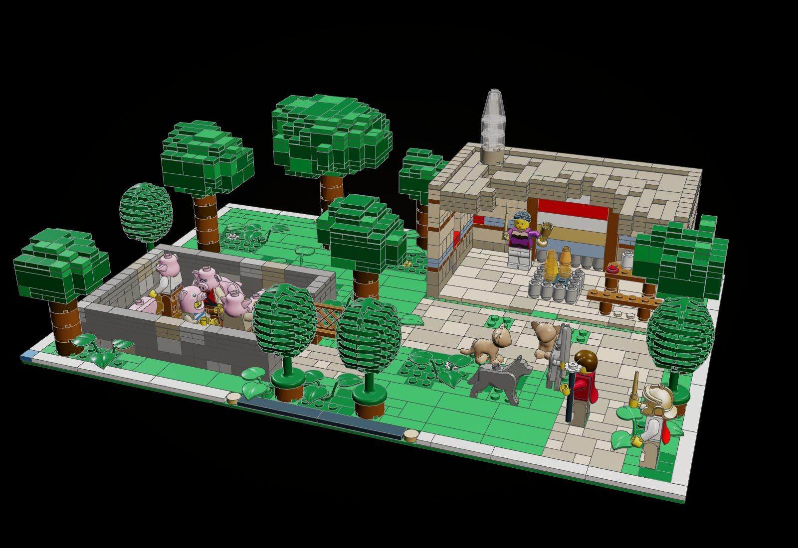
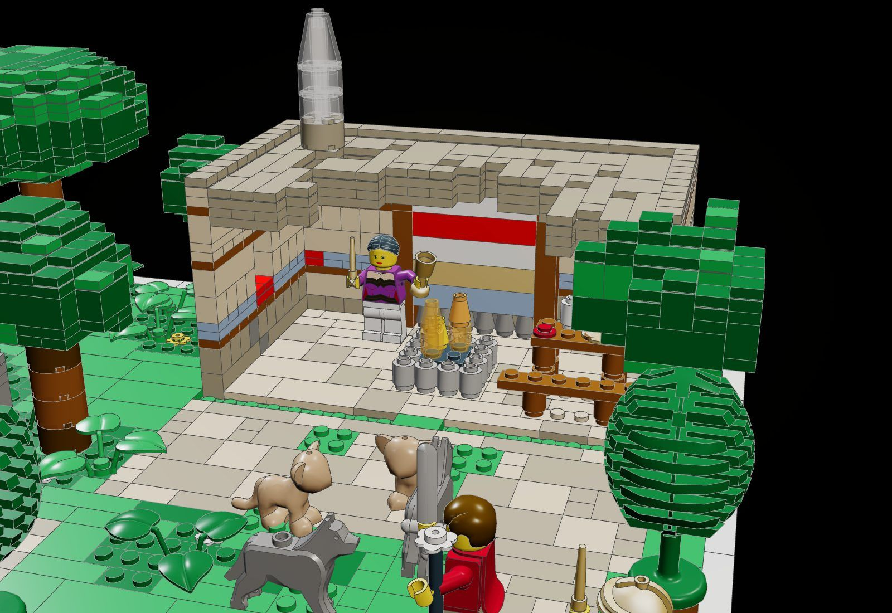
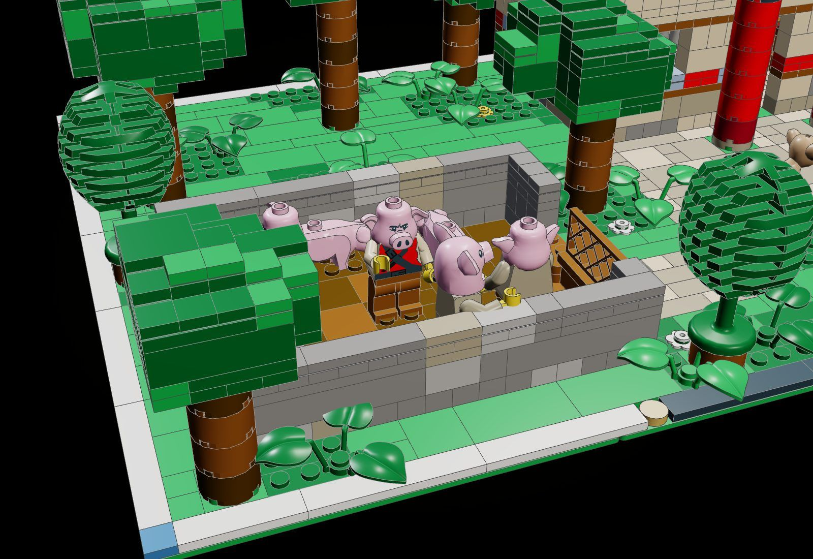
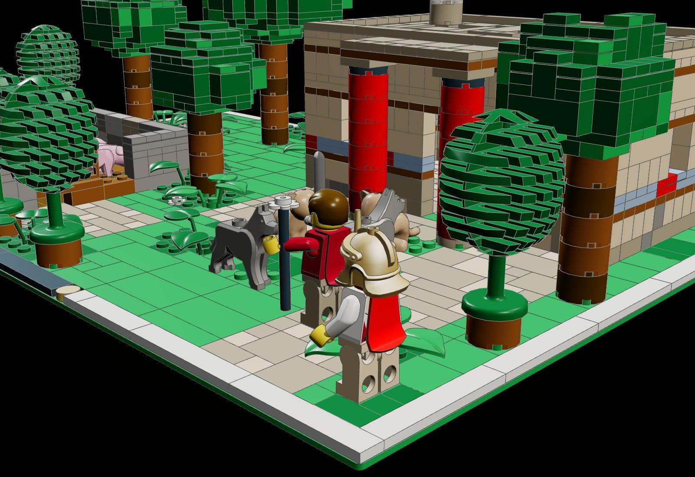
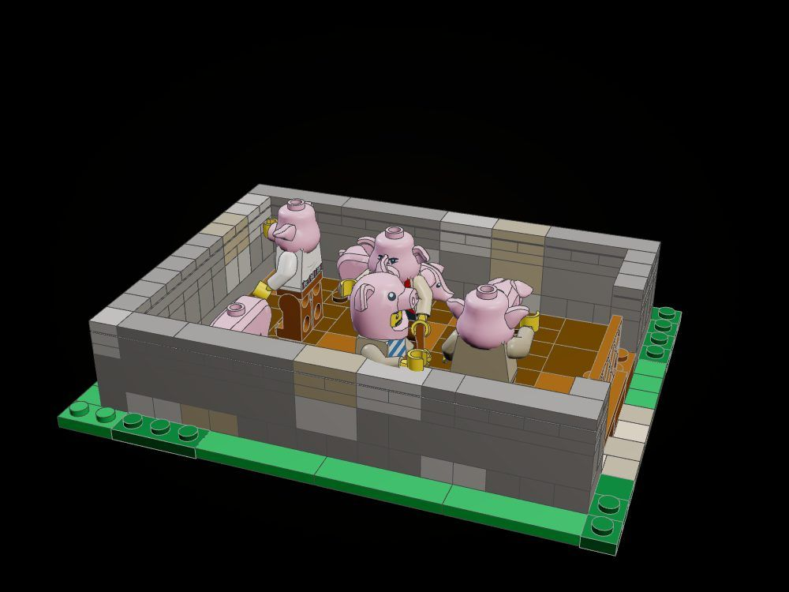
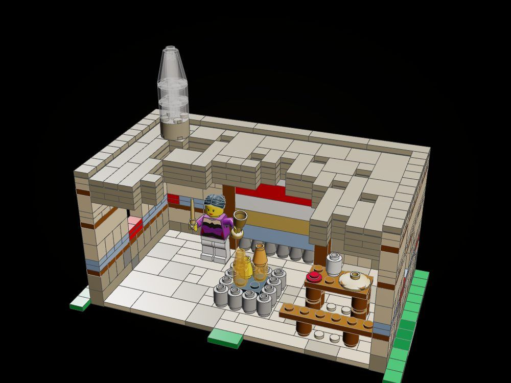
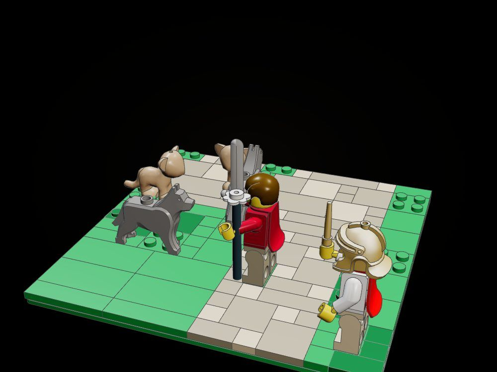

Circe's House
In the stone house in the forest clearing Circe has struck the men with her wand and they are swine in her sty; wolves and lions fawn at her gate, and Odysseus comes up the path with the moly Hermes gave him, sword drawn.
"When they had drunk she turned them into pigs by a stroke of her wand, and shut them up in her pigsties." (Odyssey X, tr. Samuel Butler)

The object
The swine: sailor minifigures whose heads swap for pig heads (one still half changed, a pig head-cover over his own), penned with three pigs behind a gate that swings open on a hinge brick.







How it is built
- A 48 x 32 base of two green baseplates, the line's white frame, black-and-gold nameplate and blue tile; grass laid in tiles with turf left in patches for ferns and flowers.
- The house is laid in plate cells: a dressed socle of dark tan and tan ashlar, timber lacing in reddish-brown plates, a fresco band of blue and red, plastered courses, a flat roof inside a parapet with a smoke-pot.
- The front wall and porch are one module that lifts off the baseplate, so the closed and open house are the same parts; both states are checked.
- The porch stands on two red 2 x 2 round-brick columns with black capitals.
- The sty gate is a lattice fence on a 1 x 4 hinge brick; it swings out toward the court.
- The pig heads are minifigure pig heads (67887) on the sailors' torsos; one man wears a pig head-cover (17351) over his own head, halfway.
- Six oaks with crowns sculpted in plates over solid cores on round-brick trunks, the rest of the forest stock trees.
The builds inside the build
The sty and the swine
The walled pen with its hinged gate, the trough of acorns, three pigs and four pig-headed men.
Circe's loom hall
The house without its front: Circe at her loom, the hearth, the table and bench, the smoke-pot on the roof.
The wolves and lions at the gate
Odysseus with sword and moly, Hermes, two wolves and a lion on a 16 x 16 base.
What the checker says
| Build | File | Pieces | Loose | Clashes |
|---|---|---|---|---|
| Circe's House | set.circes-house | 2,032 | 0 | 0 |
| Circe's House (front lifted away, gate open) | set.circes-house-open | 1,813 | 0 | 0 |
| The sty and the swine | set.circes-house-sty | 283 | 0 | 0 |
| Circe's loom hall | set.circes-house-loom-hall | 619 | 0 | 0 |
| The wolves and lions at the gate | set.circes-house-gate | 137 | 0 | 0 |
In the film


Still to do
- The red columns are straight 2 x 2 round bricks; they do not taper downward as Minoan columns do.
- The lions are the lion-cub animal part (14734); there is no adult lion in the parts library used.
- The gate hinge and its fence, the figures, the heads and the moly are placed by hand and not checked by the tool; the fence is marked as held by its hinge.
- The smoke is a short column of clear round bricks and a cone; it reads more as glass than as smoke.
- The loom-hall sub-assembly is the house cut from the model without its roof module separated; a real instruction step would build the roof as its own lift-off.